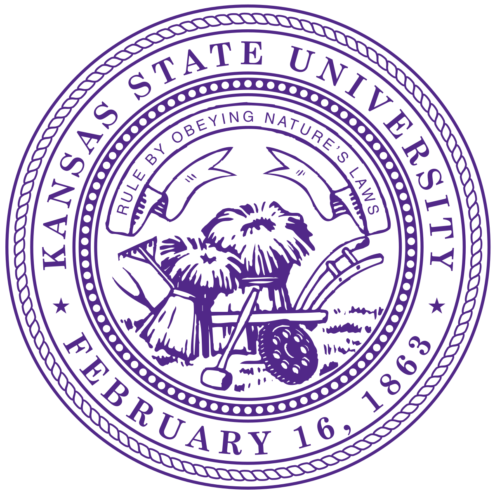

Hi, thank you for visiting my site.
I obtain my Ph.D from Biochemistry and Molecular Biophysics department in Kansas State University.
My major professor is Prof. Ho Leung Ng.
I am a scientist at Alkermes Inc. I am currently working on using computational methods to study the mechanisms of biological systems and using machine learning to study drug discovery.
I have expertise in molecular dynamics simulations of protein in water and membrane protein in lipid bilayer and machine learning.

Educations
-
Ph.D. candidate, Biochemistry and Molecular Biophysics
- Kansas State University, Manhattan, KS2022
- Advisor: Prof. Ho Leung Ng
- Thesis: The new insights from the study of ligands binding with proteins by computional methods
-
- M.S., Physical Chemistry
- Hebei University, China2014
- Advisor: Prof. Gang Ma
-
- B.S., Chemical Engineering
- Henan University of Science and Technology, China2009



Professional Training
- Open Science Grid Virtual School 2021 - Held by the OSG
- The main concepts of High Throughput Computing (HTC)
- The basics of using HTCondor
- Getting started on OSG, a national distributed HTC infrastructure for Open Science
- How to prepare software for use in HTC systems
- Handling data (input and output) in HTC systems
- SDSC Summer Institute 2019 - Held at the San Diego Supercomputer Center
- How to use Comet, interact with the job scheduler, understand strengths and weaknesses of the available filesystems and use Singularity containers to run different operating system
- Parallel programming with MPI/OpenMP, performance optimization, code profiling, GPU programming with CUDA and scientific visualization.
- Machine Learning, Big Data processing with Spark and parallel programming with Python
- Git/GitHub and workflow management with Kepler
- RapiData 2018: Data Collection and Structure Solving: A Practical Course in Macromolecular X-Ray Diffraction Measurment - Held at the SLAC National Accelerator Laboratory
- Specimen preparation, tactics in data collection
- X-ray light sources
- X-ray detectors
- Data reduction
- Structure solving by MAD, SAD and Molecular replacement
- Complementary methods (spectroscopy and small angle scattering)

Softwares
- Schrodinger Suite:
- Desmond: Molecular dynamics (MD) simulations, Metadynamics simulations
- Glide: Ligand dokcing, Induced fit docking, QM-polarized ligand docking, Covalent docking, Virtual screening workflow
- LigPrep
- Jaguar: Single point energy, pKa, QM conformer & tautomer predictor
- Structure prediction: Protein homology modeling
- Docking: Protein-protein docking, peptide docking
- Amber and AmberTool:
- tleap: system builder
- Pmemd: MD simulations, GPU accelerator (CUDA), Accelerated molecular dynamics
- MMPBSA: Calculate the binding erengies
- CPPTRAJ: MD simulations trajectory analysis
- I-TASSER, GPCR-I-TASSER: protein homology modeling
- Smina, Gnina: ligand docking, virtural screening
- Autodock, AudoDockTools: ligand preparation, ligand dokcing
- Pymol: protein structure visualization
- ChimeraX, Chimera: protein structure visualization
- VMD: MD simulations trajectory analysis
- CHARMM-GUI: MD system builder for the lipid bilayer
- YASARA: Docking, MD simulations
Computer skills
- Linux
- Bash
- Python
- Numpy, Pandas, scikit-learn, Tensorflow, Pytorch
- RDKit, OpenBabel
Licenses & certifications
- Malaria parasite detection using ensemble learning in Keras
- Coursera | Credential ID 5KJBAWQ8AR94 | See credential
- Introduction to TensorFlow for Artifical Intelligence, Machine Learning, and Deep Learning
- Coursera | Credential ID BA3DLUKNNGVD | See credential
- Structuring Machine Learning Projects
- Coursera | Credential ID XTK2Y93UQKXD | See credential
- Improving Deep Neural Networks: Hyperparameter Tuning, Regularization and Optimization
- Coursera | Credential ID YKD3ZECKV6RL | See credential
- Neural Networks and Deep Learning
- Coursera | Credential ID LKJXEEXJUSXG | See credential
Publications
- Chingakham Ranjit Singh, M Rebecca Glineburg, Chelsea Moore, Naoki Tani, Rahul Jaiswal, Ye Zou, Eric Aube, Sarah Gillaspie, Mackenzie Thornton, Ariana Cecil, Madelyn Hilgers, Azuma Takasu, Izumi Asano, Masayo Asano, Carlos R Escalante, Akira Nakamura, Peter K Todd, Katsura Asano, Human oncoprotein 5MP suppresses general and repeat-associated non-AUG translation via eIF3 by a common mechanism. Cell Reports. 36.2 (2021), 109376.
- Ye Zou, John Ewalt, Ho-Leung Ng, Recent Insights from Molecular Dynamics Simulations for G Protein-Coupled Receptor Drug Discovery. International Journal of Molecular Sciences. 20.17 (2019):4237.
- Rongbing Yang, Kihoon Nam, Sung Wan Kim, James Turkson, Ye Zou, Yi Y Zuo, Rahul V Haware, Mahavir B Chougule, Factorial design based multivariate modeling and optimization of tunable bioresponsive arginine grafted poly (cystaminebis (carylamide)-diaminohexane) polymeric matrix based nanocarriers. Molecular Pharmaceutics. 14.1 (2017): 252-263.
- Yachao Gao, Ye Zou, Yan Ma, Dan Wang, Ying Sun, Gang Ma, Infrared probe technique reveals a millipede-like structure for Aβ (8-28) amyloid fibril. Langmuir. 32.4 (2016): 937-946.
- Chikara Otsubo, Sivakama Bharathi, Radha Uppala, Olga R llkayeva, Dongning Wang, Kevin McHugh, Ye Zou, Jieru Wang, John F Alcorn, Yi Y Zuo, Matthew D Hirschey, Eric S Goetzman, Long-chain acylcarnitines reduce lung function by inhibiting pulmonary surfactant. Journal of Biological Chemistry. 290.39 (2015): 23897-23904.
- Ye Zou, Wenying Hao, Haoyi Li, Yachao Gao, Ying Sun, Gang Ma, New insight into amyloid fibril formation of hen egg white lysozyme using a two-step temperature-dependent FTIR approach. The Journal of Physical Chemistry B. 118.33 (2014), 9834-9843.
- Ye Zou, Gang Ma, A new criterion to evaluate water vapor interference in protein secondary structural analysis by FTIR spectroscopy. International Journal of Molecular Sciences. 15.6 (2014):10018-10033.
- Ying Sun, Ye Zou, Gang Ma, A convenient and cost-effective fourier transform infrared (FTIR) spectrometer purging setup for the undergraduate teaching laboratory. Journal of Chemical Education. 90.7 (2013): 950-951.
- Ye Zou, Yiyi Li, Wenying Hao, Xiaoqian Hu, Gang Ma, Parallel β-sheet oligomer: new insights into amyloid formation of hen egg white lysozyme under heat and acidic condition from FTIR spectroscopy. The Journal of Physical Chemistry B. 117.15 (2013): 4003-4013.
- Gang Ma, Yiyi Li, Jun Dong, Ye Zou, Zhihui Zhang, Ying Sun, The dynamic nature of incubation solution after cooling to room temperature in amyloid formation of hen egg white lysozyme: an FTIR assessment. Vibrational Spectroscopy. 64 (2013):44-50.
Reference
34 Chalmers Hall
Kansas State University
Manhattan, KS 66506
Email: hng@ksu.edu
258 Chalmers Hall
Kansas State University
Manhattan, KS 66506
Email: kasano@ksu.edu
Kansas State University
Manhattan, KS 66506
Email: ldavis@ksu.edu